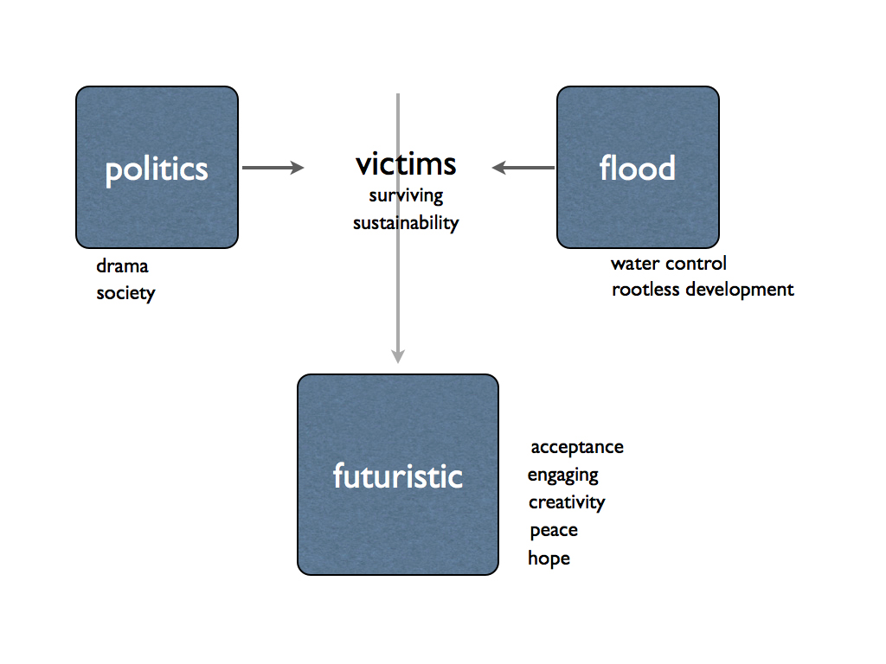

Can you imagine how Englishman in 18th Century would think when they think about war in Han dynasty in China.
I would be something fictional, unreal, distance imagination that we almost unable to relate ourself to.
In 19xx, Vietnam wars is the first war that is televitized.
Pictures from the middle of field of south east asian was injected direct to the screen in American living room.
And that’s how hippy bloom in 80s(?) freedom hope become universal issue.
But now with new wave of media, informational revolution start its fire in the middle east, the tide of democracy start its roaring to be free.
Cut back to the south east asian, Burma, one of the most military dictatorship in the world announce to release all of their political prisonner in xx/xx/2011 with the pressure from all over the world for decades.
Thailand, my homeland, where declared to be democracy for 75 years. But the life there we still live in the culture that class of people still roots itself deep in our society.
…..
Just like how people think thailand is exotic outland. Or how major flooding situation happen and seems to be surreal.
I want to take it down to a few human interaction where we can see, touch, hear, can experience by oneself, not through computer screen and lift them to that ‘universal’ where every human can understand each other. And also they can start to make the change. It would be a small change. But with millions of small change that how we can change the world. Thailand is a babyboy in democracy philosophy, we still have to understand both the philosophy of it and how it can fit with our own culture. But for now, as a man who believe that we can make this world a better place with a small thing. I take side with democracy. And want to stop this ridiculous culture of discrimination in my homeland. Help me, please. I need your signage, no, ‘we’, We need it. The world we wanted to see need it.
second draft
In October 2011, Thailand is facing the most severe flood in 5 decades. The tides of water take away so many things. As now at the end of November, the estimated loss from this crisis has rises up to $20 billion. On the other hand, it also reveal so many things. Unlike tsunami which the tide is so strong and wipe out lives in minutes, flooding takes days and weeks from place to place. That’s why this apocalypse is not just taking away things, but what it does is also reveal the truth in the society. The truth of social injustice and inequality which lying under this country for a long time and just surface up above the water. And let us stop and think how to continue living with both mother nature and this society.
Democracy in Thailand still in a long trial to achieve.
{kind=link}
first draft
Leaving the country I was born for the longest time in my life would be just another personal story of myself if there is not a biggest flooding in 50 years happening at the same time back in my homeland.
Thailand used to be called the Eastern Venice, since the people and the city was revolving their life around the flow of the river for transportation. The urban area used to develop along the rivers and canals. But with reckless adoption of western civilization, people forgot their roots, paved the road and turned their back to the river for decades. Now when all the problem of reckless urban development stack up to the point of crisis, the major flooding slowly have its path through this small country down to the outfall, Bangkok, the capital of the country.
Every aspect of the context of this natural disaster is very unique to me. Because I can only experience this flooding only through the internet, to be flooded by flooding information flow is very strange and surreal experience. And on the other side, Thai politic controversial is also far from the point of settle down. Five years after the coup, we just finally have a government that really come from the election. Yet middle class people in Bangkok not so pleased with the choice of 65% of the people. And on the internet, there are so many hoax that trying to break people into two side with hatred again.
I think how media in Thailand that incite people to blame the government all the time and not offering much futuristic of this disaster: how to live together, both with the people with different political view and the mother nature that flow through the middle of the country. So that is the role I want to take. To send the message of peacefulness between this different thought, sustainability both on political and natural layers of the country. In the piece that both people here in America and back in Thailand can understand it.